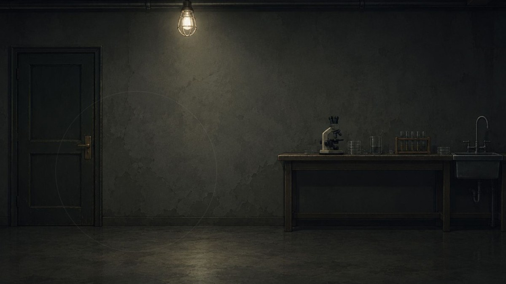
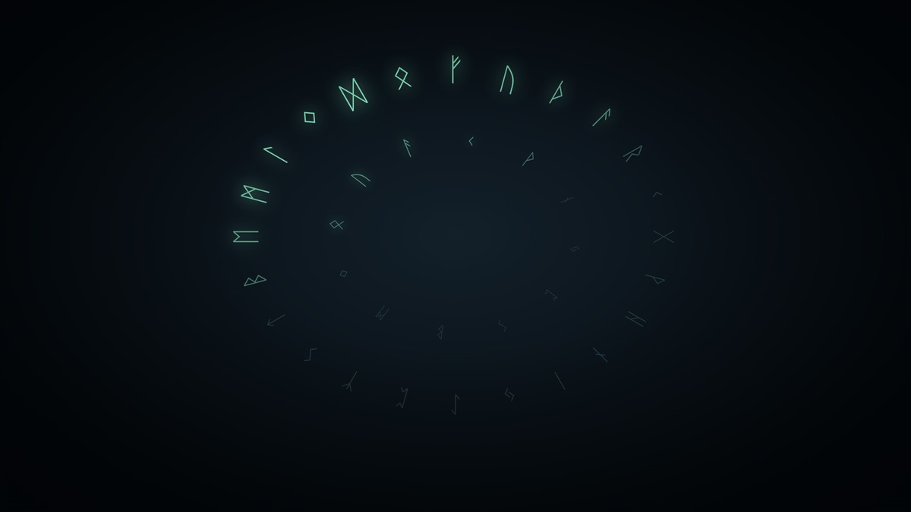
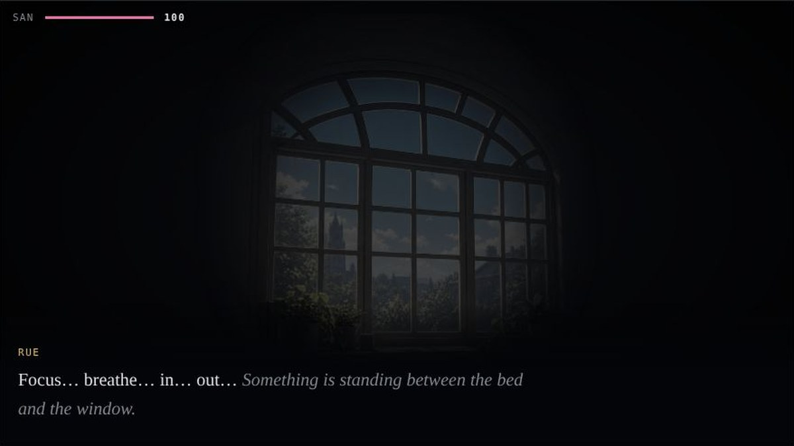
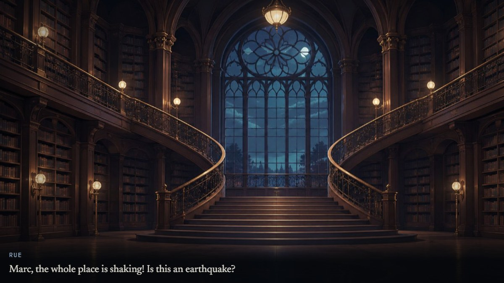

Each one sees what the others cannot. Pick yours.
An old university with older traditions. Four freshmen — each one brilliant. Each one fragile in a different place. Here, MBTI decides everything. Solve it or shatter with it — for sanity is spent and knowledge is paid for. How far will you take them?
An original IP built on Lovecraftian themes, where each character’s MBTI type shapes their attributes.

A seemingly unremarkable lab. Through the eyes of the four, it is anything but. Put on their lenses and look again.
Play with Rue →
A heavy chest, and a wheel bolted into the lid. Nothing in this room opens until the wheel does.
Play with Will →
Rue meditates, falls asleep, and opens her eyes into a room that is half hers and half nightmare.
Play with Ivy →
They opened a door on the west side of the building and came out on the east. The corridors twist like paper folded too many times. What waits in the studio will cost a great deal more SAN.
Play with Marc →